| ierobežot |
contain |
ierobežot pretinieka spēku manevra brīvību noteiktā teritorijā |
pretinieks var manevrēt tikai ierobežotā teritorijā |
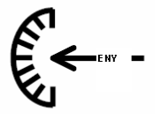 |
ierobežot var gan telpā (ģeogrāfiski), gan laikā. Šis termins nav tik konkrēts kā jēdzieni sasaistīt vai izolēt. |
| iespiest |
canalize |
ierobežot pretinieka pārvietošanos atstājot šauru manevrēšanas koridoru |
pretinieks tiek ierobežots, atstājot šauru manevrēšanas koridoru |
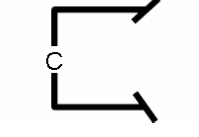 |
uzdevumā jāprecizē vēlamais koridors; skat. bloķēt, ierobežot, liegt |
| bloķēt |
block |
liegt pretiniekam iekļūt noteiktā teritorijā vai novērst tā pārvietošanos kādā konkrētā virzienā |
tiek novērsta pretinieka piekļuve/virzīšanās uz priekšu |
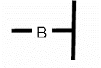 |
bloķēts spēks var pārvietoties jebkurā virzienā, izņemot to, kas ir slēgts; skat, iespiest, ierobežot, liegt |
| liegt |
deny |
neļaut pretiniekam veikt konkrētu darbību vai izmantot lietu/vietu |
pretinieks nevar izmantot konkrētu darbību vai lietu/vietu |
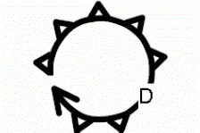 |
skat. kontrolēt, ierobežot, aizkavēt, bloķēt, iespiest, sasaistīt, novirzīt |
| sasaistīt |
fix |
neļaut pretiniekam noteiktu laiku pārvietot tā spēkus no kādas konkrētas vietas |
pretinieka rīcības brīvība |
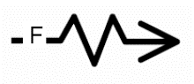 |
|
| izolēt |
isolate |
nogriezt pretinieku no tā atbalsta avotiem (punktiem), liegt tam pārvietošanās brīvību un neļaut nonākt kontaktā ar citām pretinieka vienībām |
pretinieks ir izolēts |
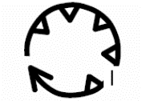 |
"nogriezt" nozīmē saraut visas saites, gan fiziski, gan psiholoģiski |
| kontrolēt |
control |
fiziski vai ar uguni pārvaldīt konkrētu teritoriju, lai liegtu pretiniekam to izmantot |
pretinieks nevar izmantot konkrētu teritoriju |
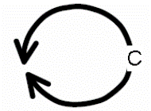 |
skat. ieņemt, saglabāt kontroli, nodrošināt, liegt |
| aizkavēt |
delay |
aizkavēt pretinieka spēku ierašanos konkrētā vietā – uz noteiktu laiku vai līdz noteiktam laikam, vai konkrētam notikumam |
pretinieka virzīšanās ātrums samazināts laikā un telpā atbilstoši izvirzītajam kritērijam |
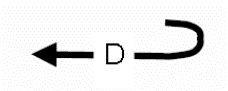 |
skat. ieņemt, saglabāt kontroli, nodrošināt, liegt |
| novirzīt |
turn |
piespiest pretinieku mainīt pārvietošanās virzienu |
pretinieka spēki spiesti pārvietoties draudzīgajiem spēkiem vēlamajā virzienā |
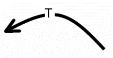 |
šī termina lietošana neattiecas uz terminu "turning movement" - apiešana. Skat. iespiest, bloķēt |
| ieņemt |
occupy |
ieņemt noteiktu rajonu bez pretinieka pretestības |
vienība ieņēmusi noteikto rajonu |
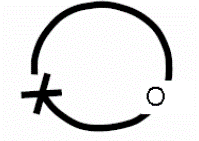 |
Dodot šādu uzdevumu, nav paredzēts, ka uzdevuma izpildes gaitā vienībai būs jāiesaistās kaujā. Skat. saglabāt kontroli, iegūt, kontrolēt, sagrābt, iztīrīt |
| saglabāt kontroli |
retain |
paturēt kādu apvidus objektu savā kontrolē, lai nodrošinātu, ka to nav spējīgs izmantot un to nekontrolē pretinieks |
pretinieks neatrodas konkrētajā teritorijā vai apvidū un neizmanto to |
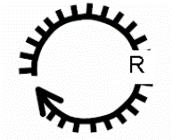 |
skat. nodrošināt, kontrolēt, ieņemt |
| nodrošināt |
secure |
ar spēku vai bez tā ieņemt pozīciju vai nozīmīgu apvidus vietu un izveidot tādu dispozīciju, lai novērstu tās sagraušanu vai zaudēšanu pretinieka darbības rezultātā |
pozīcija vai apvidus tiek noturēti |
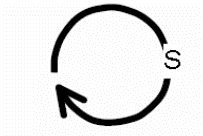 |
skat. saglabāt kontroli, iegūt, kontrolēt, ieņemt, sagrābt, iztīrīt |
s
| iegūt, sagūstīt |
capture |
sagūstīt konkrētu pretinieka personālsastāvu, iegūt tā materiālus vai informāciju |
tiek sagūstīts konkrēts pretinieka personālsastāvs, iegūti vēlamie materiāli vai informācija |
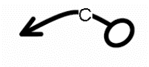 |
skat. nodrošināt, sagrābt |
| iztīrīt |
clear |
atbrīvot noteikto teritoriju no pretinieka spēkiem un likvidēt to organizētu pretošanos |
tiek nodrošināts, ka pretinieka spēki netraucē draudzīgo spēku aktivitātes |
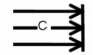 |
|
| sagrābt |
seize |
Iztīrīt konkrētu rajonu un iegūt kontroli pār to |
rajons atrodas draudzīgo spēku kontrolē |
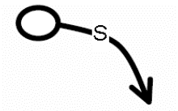 |
skat. iegūt, nodrošināt, ieņemt, iztīrīt. |